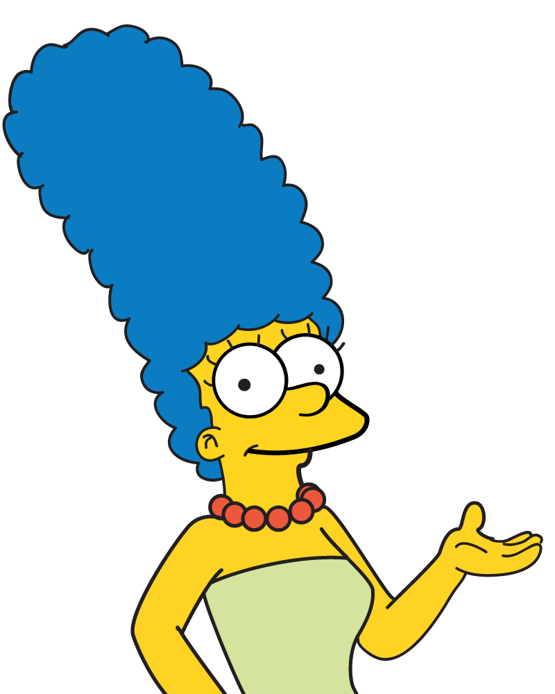
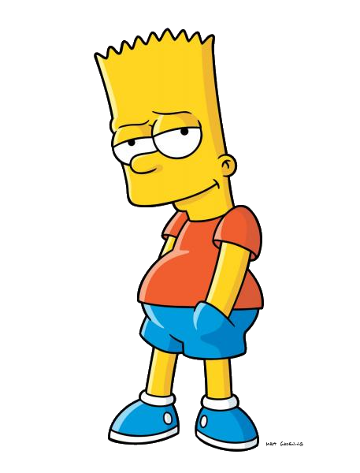
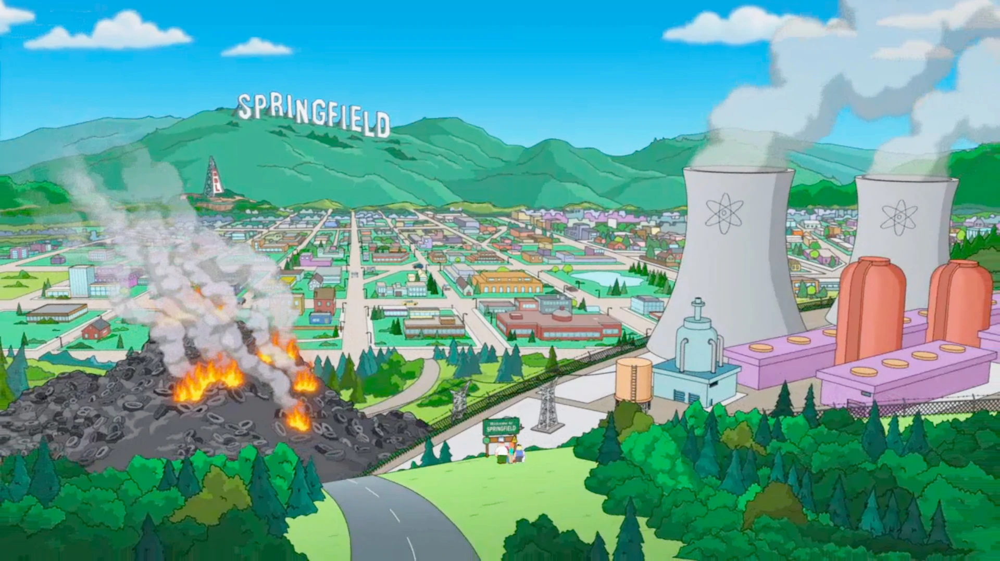

Es el padre de la familia Simpson y protagonista; tiene 39 años, es obeso, calvo y con poco sentido común, aunque ama a todos sus hijos, aun así, su relación con Bart muchas veces es temperamental y agresiva.
.png)
D'oh!
¡Mmmhhh!

Es la madre de Bart, Lisa, Maggie y esposa de Homer, tiene 34 años. Es una madre abnegada, fanática del orden y la limpieza, en muchas ocasiones es la voz no atendida de la moderación y la razón aunque posee una actitud puritana y crítica que oscila entre la inocencia y el fanatismo intolerante. Siempre que se enfada hace un sonido similar a un "hrmmm". Siempre esta en discusión con Homer, tratando de hacerle ver que su comportamiento es totalmente infantil, en algunos episodios es sobreprotectora con sus hijos.

Es el hijo mayor, tiene diez years de edad. Es travieso y a veces hiperactivo; muchas veces se mete en líos principalmente por tener ideas vandálicas o que se salen de control. Es un maestro del skate, tirachinas y grafiti.
¡Ay, caramba!
¡Baaaaaaaaart!

Es la hija del medio en la familia. Tiene ocho years, es muy madura para su edad, aunque tambien es egocéntrica y siempre quiere ser completamente perfecta; en muchas ocasiones ha sido criticada por ser la opinión que a nadie le interesa oir y por su idealismo desenfocado que la lleva a participar en movimientos y actividades de protesta donde lejos de solo protestar incluso intenta imponer su punto de vista obligatoriamente como sucedería cuando se hizo vegetariana. Lleva una relación estresante con su hermano Bart, aunque cuando se ponen de acuerdo son una dupla efectiva y de temer que han tenido logros enormes como detener criminales o ayudar a gente importante.

Es la bebe y la menor de la familia. Tiene un year, y fisicamente es la version preescolar de Lisa. Tiene el cerebro de un constante infractor de la ley e incluso en varias ocasiones ha usado armas de fuego y agredido gente; a pesar de ello mantiene la inocencia y ternura de una bebe. Siempre demuestra un comportamiento más inteligente y despierto de lo que un niño de su edad debería tener. Tiene la manía de llevar un chupete en la boca que rara vez se lo quita.
¡Chuk Chuk!


La casa oficial de Los Simpsons,siguenos para estar al pendiente de nuevos capitulos. Miralo en cualquier momento en Hulu.
Siguenos
Twitter oficial de TheSimpsons. La temporada 34 se transmite los domingos a las 8 por FOX. Miralo en cualquier momento en Hulu.
Siguenos
La temporada 34 se estrena el domingo 25 de septiembre en FOX. Transmisión de episodios completos en hulu.com the simpsons
Siguenos